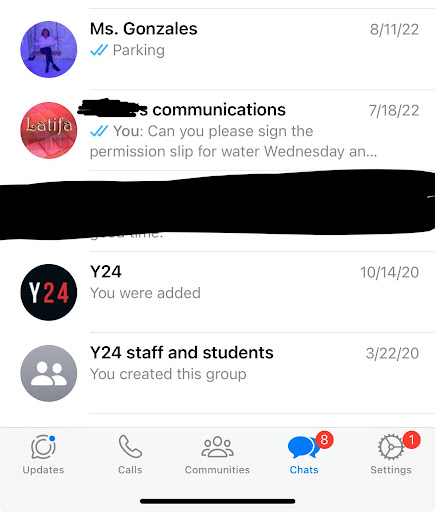
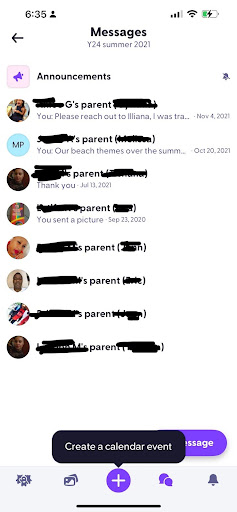
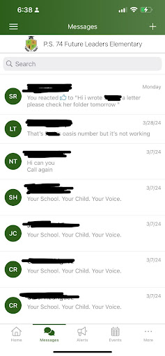

Parent
Outreach
Effective communication between parents,
teachers, and
students forms the cornerstone of a successful educational
journey. When parents are actively engaged in their child's
schooling, they gain insight into their academic progress,
challenges, and achievements. This
collaboration allows
teachers to tailor their instruction to meet individual
needs, fostering a supportive learning environment.
Moreover, students benefit from the consistent message
conveyed by both home and school, reinforcing the importance
of education and encouraging a sense of responsibility for
their learning. By embracing open and transparent
communication, parents, teachers, and students form a
cohesive team dedicated to academic excellence and personal
growth.
To provide frequent information to
families about the
instructional program, I utilize a variety of channels such
as newsletters, emails, parent-teacher conferences, and
online platforms like Class Dojo or ParentSquare.
Additionally, I involve students in preparing materials for
their families by assigning projects or presentations that
require them to communicate their learning and achievements.
This not only enhances student engagement but also empowers
them to take ownership of their education and share their
progress with their families.
To ensure families are regularly informed
about student
progress, I implement a transparent communication system
that includes regular updates on grades, assessments, and
behavior. Students play a key role in designing this system,
providing input on how they prefer to showcase their
progress and what information they believe is important for
their families to know. By involving students in the
process, we create a more personalized and meaningful
communication approach.
When responding to family concerns, I prioritize
professionalism and cultural sensitivity. I actively listen
to their concerns, validate their perspectives, and strive
to find solutions collaboratively. I make efforts to
understand and respect the cultural backgrounds and values
of each family, adapting my communication style and approach
accordingly. Building trust and rapport with families is
paramount, and I ensure that every interaction is conducted
with empathy, respect, and a genuine commitment to
addressing their needs and concerns.
Various forms of communication have been employed to reach
parents, including Class Dojo, ParentSquare, WhatsApp, text
messages, email, phone calls, and in-person meetings.
Parent Outreach Log